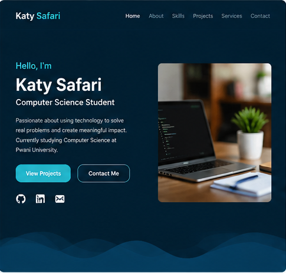
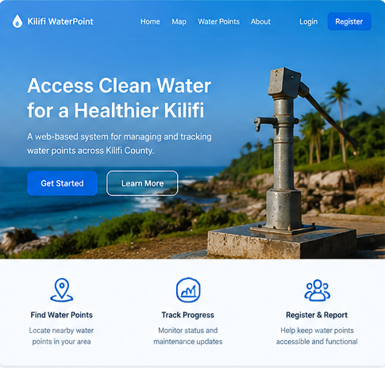
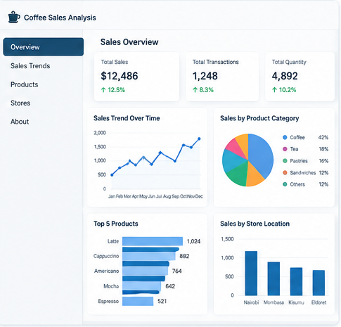
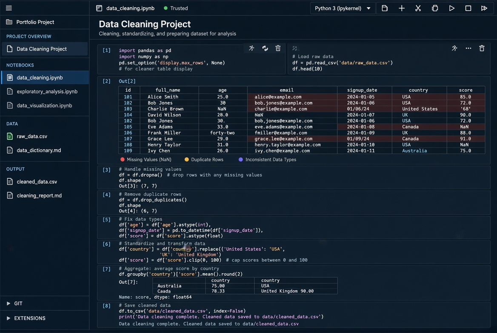
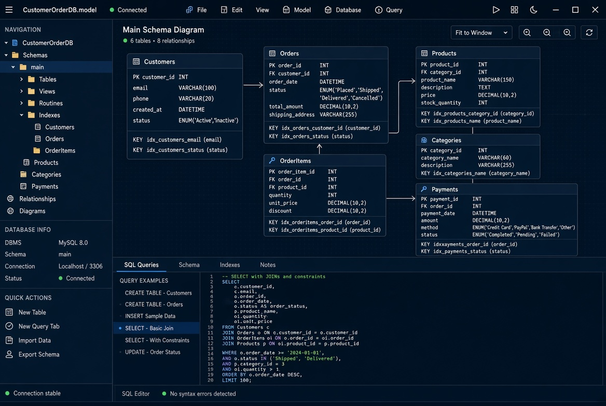

Portfolio
Projects I’ve built while studying Computer Science, from web systems and databases to data cleaning with Python.
- All
- Web
- Data
- Database
- Academic


Personal Portfolio Website
A responsive personal portfolio website designed to showcase my skills, education, projects, services, and journey as a Computer Science student.


Kilifi WaterPoint Management System
A group academic project focused on improving access to water-point information in Kilifi County through a web-based management system.


Coffee Shop Sales Analysis
An exploratory data analysis project using coffee-shop transaction data to clean, analyze, and visualize sales patterns across products and store locations.


Data Cleaning Projects
Hands-on data-cleaning projects involving missing values, duplicates, inconsistent values, incorrect data types, filtering, grouping, and data transformation.


SQL Database Projects
Practice projects focused on designing relational databases, creating tables and relationships, applying constraints, and retrieving information using SQL queries.